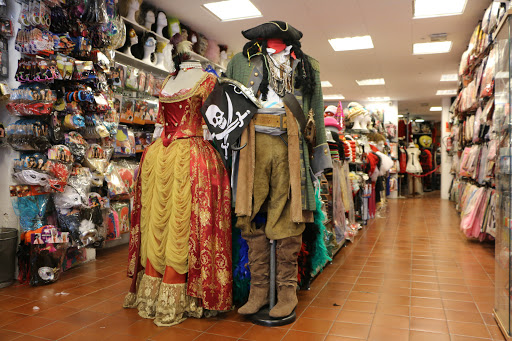
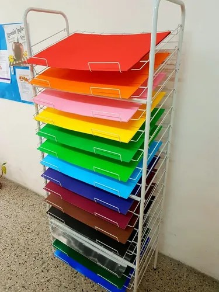
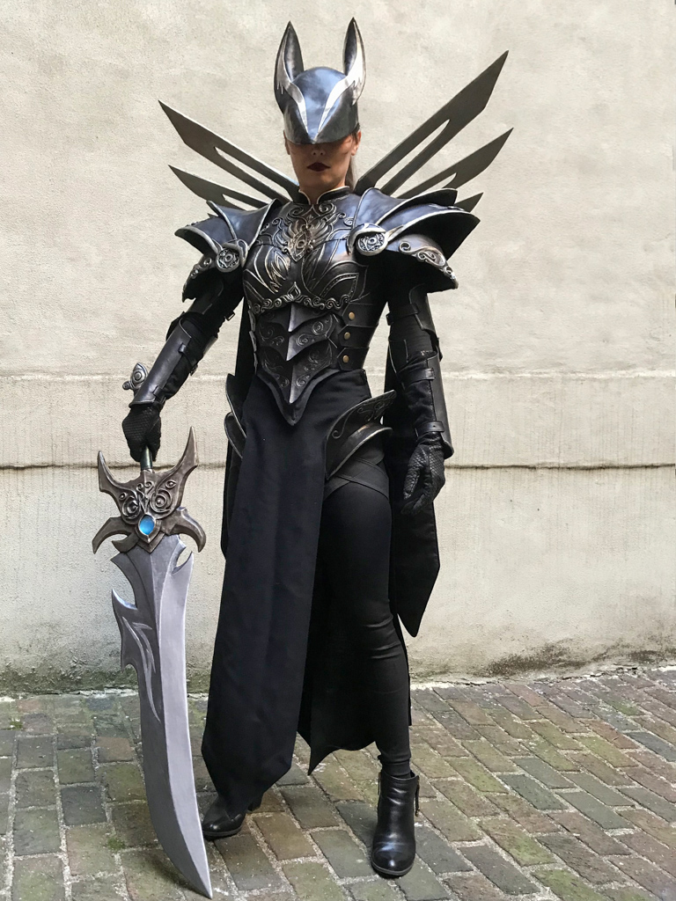

Sobre Nosotros
La mejor Tienda de Cosplay en Tenerife
En CosplayStore, entendemos la pasión por el detalle. Somos especialistas en ofrecer materiales para cosplay en Canarias, eliminando las barreras de aduanas y los envíos costosos desde la península.
Nuestra tienda nace para dar soporte a la comunidad local, ofreciendo desde Goma EVA de alta densidad hasta pelucas resistentes al calor y herramientas de precisión como aerógrafos y multiherramientas.
Nuestra misión
Ayudar a la comunidad canaria a crear personajes increíbles con materiales profesionales y asesoramiento personalizado.
Valores que nos mueven
- ✨ Creatividad: Creemos que no hay límites para lo que puedes construir.
- 🔥 Pasión: Somos cosplayers ayudando a cosplayers.
- 🏝️ Comunidad: Potenciamos el talento en eventos como la TLP y otras convenciones de las islas.
Visita nuestro Stock Real
Echa un vistazo a nuestra tienda física y a algunos trabajos hechos con nuestros materiales.

Nuestro local en Tenerife
Materiales Profesionales
Worbla y Termoplásticos Pelucas de Alta Calidad
Pelucas de Alta Calidad